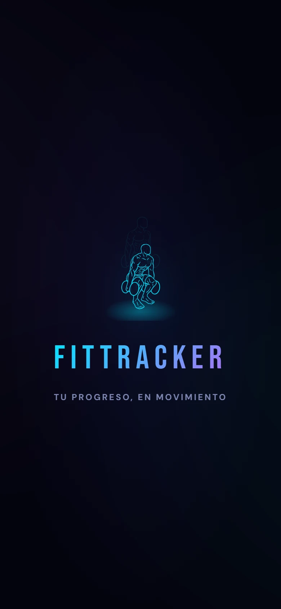

Desarrollo webWeb development
Aplicaciones que la gente usa todos los díasApps people use every day
Construyo aplicaciones web completas con Google Apps Script, JavaScript y hojas de cálculo como base de datos: del modelo de datos y el servidor a una interfaz cuidada que funciona en el celular.
I build complete web apps with Google Apps Script, JavaScript and spreadsheets as a database: from the data model and server code to a polished interface that works on a phone.
2 apps en uso realapps in real use
~7.400 líneas en FitTrackerlines in FitTracker
43 funciones de servidorserver functions
9 hojas como base de datossheets as a database
FitTracker
Aplicación de entrenamiento y nutrición · proyecto personal · en uso diarioTraining and nutrition app · personal project · used daily



Mi rol: todo, en solitario: modelo de datos, servidor, interfaz, animaciones y sonido.My role: everything, solo: data model, server, interface, animations and sound.
- Base de datos en 9 hojas de Google Sheets (entrenos, series, nutrición, peso, calendario, equipamiento, logros, ajustes y coach).
- Servidor en Apps Script con 43 funciones y caché, para que la app abra rápido aunque la planilla crezca.
- Progresión automática: sube repeticiones o peso según el tipo de ejercicio y cómo te fue en la sesión anterior.
- Database across 9 Google Sheets (workouts, sets, nutrition, weight, calendar, equipment, achievements, settings and coach).
- Apps Script server with 43 functions and caching, so the app opens fast as the sheet grows.
- Automatic progression: raises reps or weight depending on the exercise type and your last session.
- Gráficos propios en canvas: volumen semanal, grupos musculares, peso y proteína.
- Rachas, logros con celebración, cuatro temas de color, sonidos y modo sin conexión.
- Diseño pensado primero para el celular, instalable como app.
- Custom canvas charts: weekly volume, muscle groups, weight and protein.
- Streaks, celebrated achievements, four color themes, sounds and offline mode.
- Mobile-first design, installable as an app.
JavaScriptHTML/CSSGoogle Apps ScriptGoogle SheetsCanvas
Capturas de la app real con datos de ejemplo. El código es privado; lo comparto a pedido.
Screenshots of the real app with sample data. The code is private; available on request.
Minutas de reuniones · HubLabMeeting minutes · HubLab
Práctica profesional · laboratorio de proyectos de empresa · mar–may 2026Professional internship · company project lab · Mar–May 2026

Mi rol: desarrollé el módulo de minutas del ecosistema HubLab y, al terminar la práctica de mis compañeros, lideré el equipo de Data Control.My role: I built the meeting-minutes module of the HubLab ecosystem and, when my teammates' internships ended, I led the Data Control team.
- Servidor en Apps Script conectado a Google Sheets: un ID único por registro e historial agrupado por célula.
- Búsqueda de integrantes desde la base de RRHH, acceso por RUT y por PIN de cada célula.
- Tablero de temas por estado, acuerdos y asistencia del equipo, con interfaz responsive en Bootstrap y JavaScript.
- Resolví incidencias del resto del ecosistema, documenté los módulos y capacité a integrantes nuevos.
- Apps Script server connected to Google Sheets: a unique ID per record and history grouped by team.
- Member lookup from the HR database, access by national ID and per-team PIN.
- Topic board by status, agreements and team attendance, with a responsive Bootstrap and JavaScript UI.
- I fixed issues across the ecosystem, documented the modules and onboarded new members.
Google Apps ScriptGoogle SheetsJavaScriptBootstrapLiderazgoLeadership
Capturas con personas y datos inventados. El código pertenece a HubLab y no es público.
Screenshots with made-up people and data. The code belongs to HubLab and is not public.
Este portafolioThis portfolio
HTML, CSS y JavaScript sin frameworks · GitHub PagesHTML, CSS and JavaScript, no frameworks · GitHub Pages
- El sobre de REZAGO sigue a la barra de desplazamiento: 127 cuadros dibujados por el propio juego, en un canvas con inercia.
- La carta se despliega en 3D con tres copias de la hoja real, y calza exacto con ella al terminar.
- La lupa replica el shader del juego con filtros SVG: aumento central, orilla comprimida y colores separados en el canto.
- Las cifras de itch.io se actualizan solas cada día con GitHub Actions y la API de itch.
- Bilingüe, se adapta al celular y respeta a quien pide menos movimiento en su sistema.
- The REZAGO envelope follows the scrollbar: 127 frames drawn by the game itself, on a canvas with easing.
- The letter unfolds in 3D from three copies of the real page, matching it exactly at the end.
- The magnifier recreates the game's shader with SVG filters: central zoom, compressed rim and split colors at the edge.
- itch.io figures update daily through GitHub Actions and the itch API.
- Bilingual, mobile-friendly and respectful of reduced-motion settings.